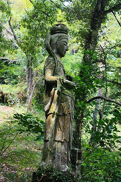
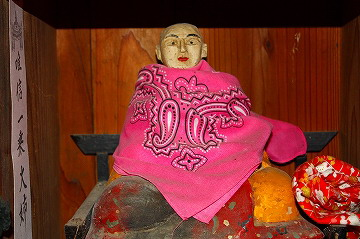

轟地蔵/大分県杵築市
国東半島南部の城下町杵築。
城下町から離れた山中に轟地蔵と呼ばれる信仰スポットがある。
ロケーションとしては車道から坂道を下って下って谷底に向かう感じ。
下り坂の途中にあるコンクリ観音。

そうこうしている内に谷底に到着。
谷底は狭いながらもあちこちに石仏が並び箱庭のような場所だった。
両斜面には比較的新しい石のお地蔵さんがずらりと並んでいる。
そしてその奥には十王像が。
十王像とは死後の裁きをする十人の裁判官の事で一番有名なのはもちろん閻魔大王。
南北朝時代の作で市の文化財に指定されているそうな。
さらに奥にはチョボチョボと水が滴り落ちる小さな滝。

滝の下には苔で覆われてて何の像か判別出来ない石像が並んでいた。
豊姫というお姫様が婚姻直前によろしくない噂が立ち破談になったのを嘆きこの淵に入水自殺を図り、それを哀れんで祀ったのがそもそもの縁起である。
その豊姫を哀れみ建立したのがこのお地蔵さんだ。
何でも姫様にあやかって白く塗れば美人になれるとか…
確かに地蔵はビッチリと白く塗られている。
…ところで先程の滝壷だが、どう考えても入水出来るほど深くない。
溺れるどころか全身水に浸る事すら不可能な水深。
精々手の平を浸す程度の水深なんですよ。
豊姫が入水したとされる600年前はさぞかし水深も深かったのだろうか。今となっては想像も付かない。
谷底にあり、日も差さず、水気もあることからこの場所自体が猛烈な湿気で覆われている。
なので多くの石仏が苔で覆われていて、一種独特の雰囲気を醸し出している。
我が国では山岳信仰系の修行場などでよく見られるのだが、このような猛烈な湿気の中にある霊場では神々しいまでの苔むした石仏を見る事が出来る。
苔をまとう事によって得られる神性のようなものがこの国の信仰風景にはあるように思える。
くぼ地状のこの場所は湿気だけでなく人々の信仰、ひいては人間の感情の澱のようなものも溜まっているような気がする。
拝殿のような建物には弘法大師が安置されていた。

その建物から見た霊場全域。
山の中の谷間にひっそりと存在する祈りの箱庭。
誰もいない谷底で水の落ちる音を聞いているのは実に風流なのだが、蚊が凄くてとてもじゃないけどのんびり出来ませんでした…
特に何があるって訳じゃないんだけど、この「何か」が吹き溜まった感じが凄く印象深かったんです。ハイ。
2008.08.
珍寺大道場 HOME